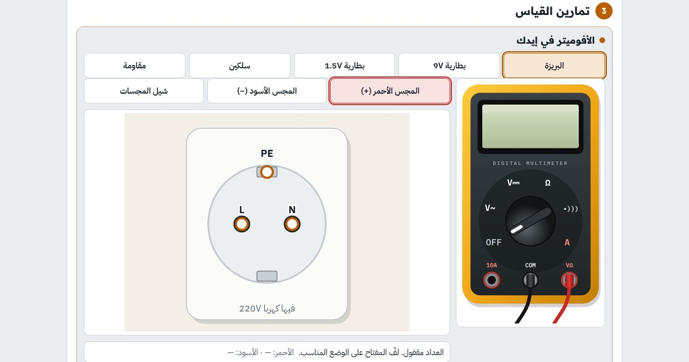

كورس · للمبتدئين خالصبالعربي
كورس أساسيات الكهربا للمبتدئين
من «يعني إيه فولت؟» لحد ما تمسك الأفوميتر وتوصّل لمبة وبريزة وتدوّر على العطل لوحدك.
أول درسين مفتوحين للكل، من غير حساب

الكورس بالأرقام
13درس بالترتيب، كل درس مبني على اللي قبله
+50تجربة وتمرين وسؤال بيتصحّحوا لوحدهم
1امتحان نهائي وشهادة إتمام بكود تحقق
0خبرة محتاجها قبل ما تبدأ
أساسيات الكهربا
إنت هتتعلّم إيه
- تفهم الجهد والتيار والمقاومة والقدرة بتشبيهات سهلة
- تفرّق بين التوالي والتوازي، وليه البيت كله متوصّل توازي
- تحسب استهلاك الأجهزة وفاتورة الكهربا بالكيلووات ساعة
- تعرف الفرق بين AC و DC، وسنجل فاز وتلاتة فاز، وألوان الأسلاك
- تمسك الأفوميتر صح: فولت وأوم وتوصيل وتيار، من غير ما تحرقه
- تقيس سخان وموتور وفيوز وترانس وتعرف السليم من البايظ
- تختار مقاس السلك والقاطع المناسب للحمل
- توصّل لمبة بمفتاح وبريزة بأرضي ومفتاح سلم، وتدوّر على أعطال البيت
المحتوى
الدروس
بالترتيب، وكل درس فيه شرح بسيط وتجارب بإيدك وأسئلة.
- يعني إيه كهربا؟مفتوح للكلالجهد والتيار والمقاومة والقدرة بتشبيه الميّة، وإزاي فاتورة الكهربا بتتحسب
- الجهد والتيارمفتوح للكلالفولت بيزق والأمبير بيمشي: الدايرة المقفولة، اتجاه التيار، الوحدات وتحويلها، وإزاي تقيسهم
- التوصيلية والمواد الموصلة والعازلةالنحاس والألومنيوم والبلاستيك والميّة: مين يوصّل ومين يعزل، وطول وتخانة السلك بيأثروا إزاي
- التوصيل على التوالي والتوازيلمبات ورا بعض وجنب بعض: التيار والجهد في كل لمبة، ليه البيت كله توازي، والبطاريات
- القدرة والطاقةالوات والكيلووات والحصان، الكيلووات ساعة وفاتورة البيت، الحرارة في السلك، والكفاءة
- أنواع الكهرباالمستمرة والمترددة، سنجل فاز وتلاتة فاز، وألوان الأسلاك والأرضي
- السلامة والعدّةمفك الاختبار، قاطع التسريب، والعدّة اللي لازم تبقى معاك
- الأفوميتر (AVO)تقيس فولت وأوم وتوصيل وتيار من غير ما تتعوّر ولا تحرق العداد
- قياس الأجهزة عمليًاالسخان والغلاية واللمبة والفيوز والموتور، وقياس التيار بالكلامب
- المحوّل (الترانس) والباور سبلايإزاي الترانس بيوطّي الجهد، والباور سبلاي بيحوّل الكهربا المترددة لمستمرة، وإزاي تقيسهم
- قانون أوم والقدرة واختيار السلك والقاطعتحسب التيار من القدرة، وتختار القاطع ومقاس السلك صح
- توصيل اللمبة والبريزةوصّل بإيدك: لمبة بمفتاح، بريزة بأرضي، مفتاح سلم، ولمبتين على التوازي
- أعطال البيت الشائعةلعبة تدوّر فيها على العطل بالتستر والأفوميتر، والامتحان النهائي
لمين
مين الكورس ده ليه
- لو جديد على الكهربا خالص ومش عارف تبدأ منين
- لطلبة الدبلومات والمعاهد الفنية وأولى هندسة
- لو عايز تصلّح حاجات البيت بنفسك وبأمان
- قبل ما تدخل كورس الكلاسيك كنترول أو الإنسترومنتيشن
أسئلة بتتكرر
قبل ما تسأل
محتاج أعرف أي حاجة قبل الكورس؟
لأ خالص. الكورس بيبدأ من الصفر، وبيشرح كل كلمة بتشبيهات من الحياة اليومية قبل أي أرقام.
محتاج أفوميتر أو عدّة عشان أتعلّم؟
مش لازم. الأفوميتر واللوحات والأجهزة كلها تفاعلية جوه الصفحة. لو عندك أفوميتر حقيقي، تقدر تجرّب عليه نفس الخطوات بعد ما تخلّص.
فيه شهادة؟
أيوه. لما تخلّص كل الدروس والامتحان النهائي وانت داخل بحسابك، تطلّع شهادة إتمام عليها اسمك وكود تحقق و QR أي حد يقدر يتأكد منه.
الكورس مجاني؟
أول درسين مفتوحين للكل من غير حساب. باقي الدروس محتاجة حساب مجاني تعمله في ثواني بإيميلك.
ينفع أذاكر من الموبايل؟
ينفع. الكورس شغال على الموبايل والتابلت والكمبيوتر، وتقدّمك بيتحفظ في حسابك وبيتنقل معاك على أي جهاز.
جاهز تبدأ أساسيات الكهربا؟
أول درسين مفتوحين للكل، من غير حساب. ادخل دلوقتي وكمّل على راحتك، وتقدّمك بيتحفظ.